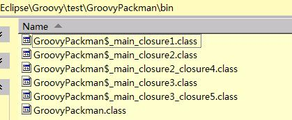
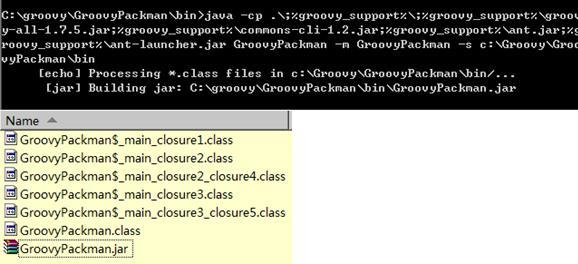
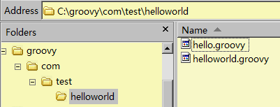
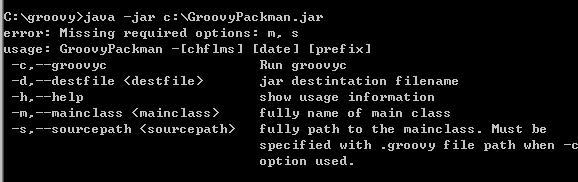
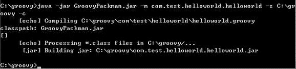
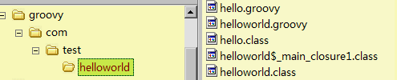
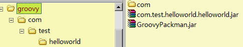
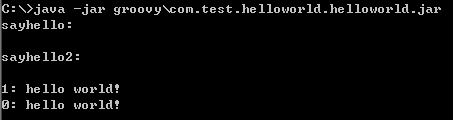

在本文中将会涉及到：
- 使用 CliBuilder 来实现对命令行选项的支持，脚本执行时所需要的参数将通过命令行选项的方式传递。
- 使用 GroovyClassLoader 加载 Groovy class。
- 使用 AntBuilder 来构建 Jar 包。
也许您写了一些有趣或实用的 Groovy 脚本并希望与您的朋友分享，可是您并不想强迫他们安装 Groovy，所以您也许想要做一个小工具让您的朋友们能够用它编译您的 Groovy 脚本并且生成一个可执行的 Jar 包。本文将介绍如何制作一个小工具让您的 Groovy 脚本能够在没有安装 Groovy 的环境下也能被即时编译和打包成为可执行的 Jar，并通过此过程介绍 Groovy 的一些有趣的特性。
在本文中，我们将设计并实现一个命令行工具，并通过它来完成对 Groovy 脚本的即时编译和打包。我们将使用 CliBuilder 来实现程序对命令行的处理；使用 AntBuilder 来处理打包的问题；使用 FileSystemCompiler 类来实现对 Groovy 脚本文件的编译。
通过本示例了解 Groovy 中 CliBuilder 的使用方法，以及 AntBuilder 在 Groovy 中的应用。
- Eclipse IDE
- Groovy plugin for Eclipse
- Apache Ant Java library（您可以在这里找到下载地址 http://ant.apache.org/bindownload.cgi）
由于 Eclipse IDE 和 Groovy 语言都是跨平台的，所以您可以在任何平台上编写本示例中的程序，并将它运行在任何平台上。
用 Groovy 来编写脚本是开发跨平台工具的一个不错的途径。随着脚本复杂程度的不断增长，您可能需要在您的脚本中处理命令行选项。而处理这些选项或参数并且根据情况显示相应的帮助信息可能会是件麻烦事。 Groovy 捆绑了 Apache Commons CLI 库作为它的一部分，然而它同时也提供了一个使用起来简单得多的 CliBuilder。那么，接下来我们看看该如何使用它。
清单 1. 创建 CliBuilder 实例及定义命令行选项
// 创建 CliBuilder 实例，并定义命令行选项 def cmdline = new CliBuilder(usage: 'GroovyPackman -[chflms] [date] [prefix]') cmdline.h( longOpt: 'help', required: false, 'show usage information' ) cmdline.d( longOpt: 'destfile', argName: 'destfile', required: false, args: 1, 'jar destintation filename' ) cmdline.m( longOpt: 'mainclass', argName: 'mainclass', required: true, args: 1, 'fully qualified main class' ) cmdline.c( longOpt: 'groovyc', required: false, 'Run groovyc' ) cmdline.s( longOpt: 'sourcepath', argName: 'sourcepath', required: true, args: 1, 'fully path to the mainclass. Must be specified with .groovy file path when -c option used.') |
在以上代码段中，我们首先创建 CliBuilder 的实例。CliBuilder 拥有一个叫做 Usage 的属性，可以用它来显示程序的使用说明等信息。在这里，它作为参数传递给构造函数将可以告诉程序的使用者有哪些选项可以使用。接着，我们使用名字为一个字母的方法来定义命令行选项，longOpt 属性允许选项被指定为 -h 或 --help 均可。argName 属性用来指定在使用说明中显示的选项的参数名。而 args 属性用来指定选项所需的参数个数。required 属性用来告诉命令行解析器当前选项是否是必须的。函数中最后一个参数用来指定该选项的描述信息。
Groovy 语言中闭包（closure）是一个非常重要的概念，它更象是一个“代码块”或者方法指针，代码在某处被定义然后在其后的调用处执行。关于闭包本文不多做介绍，更多详细内容请参考以下文章：
实战 Groovy: 使用闭包、ExpandoMetaClass 和类别进行元编程
GroovyDoc 中对 with(Object self, Closure closure) 方法的描述
Groovy 为我们提供了 with 方法，它允许闭包被对象的引用本身所调用，这是通过把对象赋值给闭包的 delegate 属性并且作为参数传递给闭包来实现的。使用 with 方法有时可以帮助我们减少代码量，在此我们看看使用 with() 方法定义各项参数与代码清单 1 所使用的方法有何不同。
清单 2. 使用 with 方法后的代码
def cmdline = new CliBuilder(usage: 'GroovyPackman -[chflms] [date] [prefix]')
// 使用 Object 上的 with 方法省去 cmdline 对象的限定
cmdline.with {
h longOpt: 'help', required: false, 'show usage information';
d longOpt: 'destfile', argName: 'destfile', optionalArg: true, args: 1,
'jar destintation filename';
m longOpt: 'mainclass', argName: 'mainclass', required: true, args: 1,
'fully name of main class';
c longOpt: 'groovyc', required: false, 'Run groovyc';
s longOpt: 'sourcepath', argName: 'sourcepath', required: true, args: 1,
'fully path to the mainclass. Must be specified with .groovy file path
when -c option used.';
}
|
这样，我们为程序设置了命令行入口。其中：
- 使用“-h “或”--help”来显示使用帮助信息。
- 使用”-d”或”--destfile”来目标文件名用来作为生成的 .jar 文件名，这是一个可选项。
- 用”-m”或”--mainclass”来指定主类的全名，未指定”-d”选项时将被作为目标 Jar 包的文件名。
- 通过使用"-c"选项来控制是否执行编译过程，是一个可选项。
- 当命令行中指定了"-c"时，"-s"或"--sourcepath"需指向要被编译的脚本（包）所在的目录；未指定"-c"时需指向 .class 文件所在的目录。
在本文的最后一章中您将看到通过这个命令行工具（在本文中被命名为：GroovyPackman）编译打包脚本的实例。
清单 3. 使用 parse 方法解析命令行选项
def opt = cmdline.parse(args)
if (!opt) { return }
if (opt.h) {
cmdline.usage()
return
}
|
Parse() 方法用来解析本程序执行时命令行输入的参数。通过 Parser 解析命令行参数后，我们可以得到 OptionAccessor 对象的一个实例，当输入的参数不合法时，这个对象为空。
通过 opt 对象我们可以轻松的获取到所有已经在命令行中指定的选项，我们将处理各个选项的值，使其符合我们的要求。
清单 4. 获取命令行选项并赋值给变量
// 将命令行选项赋值给变量
def mainClass = opt.m
def sourcePath = opt.s
def destFile = mainClass + '.jar'
if (!(sourcePath.endsWith("\\"))||!(sourcePath.endsWith("/")))(
sourcePath = sourcePath + "/"
)
if (opt.d) {
destFile = opt.d
}
|
在处理完程序的命令行选项之后，我们将进入本示例另一个重点：使用 AntBuilder 实现脚本的编译和打包。首先，我们来认识一下生成器。
生成器 (Builder) 是 Groovy 中的一个特性，它可以很方便地在 Groovy 中构造如 XML 文档一般的树形数据结构。而 AntBuilder 就是众多生成器中的一员，通过它您可以毫不费力地构造 Ant 基于 XML 结构的构建文件 (build.xml)，不需要处理 XML 就可以执行构建。更加令人兴奋的是，与以往费力地用复制粘贴来创建 build.xml 文件不同，您不但可以编写循环、条件语句，甚至可以利用面向对象语言的优势。
以下代码段展示了使用 AntBuilder 的一个非常简单的例子。在本示例中，当用户在命令行指定了 -c 选项时将在命令行窗口输出其指定需要编译的 Groovy 脚本文件。
清单 5. 创建 AntBuilder 实例以及处理编译对象
def ant = new AntBuilder()
if (opt.c) {
// 检查脚本文件是否存在
def scriptBase = mainClass.replace( '.', '/' )
def scriptFile = new File(sourcePath + scriptBase +'.groovy' )
if (!scriptFile.canRead()) {
println "Cannot read script file: '${scriptFile}'"
return
}
ant.echo( "Compiling ${scriptFile}" )
}
|
调用 FileSystemCompiler 即时编译 Groovy 脚本
在本示例中，用户在命令行中使用 -c 选项指定了有效的 Groovy 脚本文件之后，程序将对其进行编译。我们将使用 FileSystemCompiler 类来实现脚本文件的编译，代码段 6 展示了这一过程。
清单 6. 用 GroovyClassLoader 的实例实现编译过程
try{
FileSystemCompiler fc= new FileSystemCompiler()
fc.commandLineCompile( [ scriptFile ] as String[] )
}
catch (org.codehaus.groovy.control.MultipleCompilationErrorsException e){
println e.getMessage()
println "*** Possible solution: Please copy GroovyPackman.jar to
dir \"${sourcePath}\" and try again. ***"
return
}
|
FileSystemCompiler 类的实例相当于是 Groovy 的命令行编译器 (groovyc)。在 Groovy 中，您可以直接调用 Groovy 编译器来编译脚本文件，其命令一般为 groovyc *.groovy。这个过程将生成一个或多个 *.class 文件，这些文件可以使用 java 命令执行（但在执行 Groovy 生成的 .class 文件时，需保证 ClassPath 中指向了 Groovy 的库文件，例如：goovy-1.x.x.jar 等）。
在安装有 Groovy 的系统中您也可使用命令 groovy *.groovy，同时完成编译和运行 Groovy 脚本。与 groovyc 命令不同的是，groovy 命令不是在文件系统而是在内存中生成 *.class 文件并立即执行。
在实现了对 Groovy 脚本文件编译的功能之后，接下来将利用 Groovy 中的 Ant 任务进行打包工作。
清单 7. 通过生成器的语法来构建类似于 XML 的结构
def GROOVY_SUPPORT =
(System.getenv('GROOVY_SUPPORT'))? (new File( System.getenv('GROOVY_SUPPORT'))) : ""
// 如果系统中安装了 Groovy，打包时我们将从系统中获取程序运行所必须的 Jar 包
if (GROOVY_SUPPORT!=""){
if (GROOVY_SUPPORT.canRead()) {
// 构建可执行的 Jar 包并指定 mainclass
ant.echo("Processing *.class files in ${sourcePath}...")
ant.jar( destfile: destFile, compress: true ) {
fileset( dir: sourcePath, includes: '**/*.class' )
zipgroupfileset( dir: GROOVY_SUPPORT, includes: 'groovy-all-*.jar' )
zipgroupfileset( dir: GROOVY_SUPPORT, includes: 'commons*.jar' )
zipgroupfileset( dir: GROOVY_SUPPORT, includes: 'ant*.jar' )
// 您可以在此添加更多的 Jar 包，这取决于您的需求
manifest {
attribute( name: 'Main-Class', value: mainClass )
attribute( name: 'Class-Path', value: '.' )
}
}
}
}
// 如果系统未检测到 Groovy 环境，打包时将使用 GroovyPackman.jar 中获取程序运行所必须的 Jar 包
else {
ant.echo( "Missing environment variable GROOVY_SUPPORT: '${GROOVY_SUPPORT}'" )
def PACKMAN =
URLDecoder.decode(
GroovyPackman.class.getProtectionDomain().getCodeSource().getLocation().getFile(),
"UTF-8")
PACKMAN = PACKMAN.toString().replaceFirst("/", "")
ant.echo( "Using Packman: '${PACKMAN}'" )
ant.jar( destfile: destFile, compress: true) {
fileset( dir: sourcePath, includes: '**/*.class' )
zipfileset( excludes: 'GroovyPackman*.*,org/apache/tools/**,images/**', src: PACKMAN)
// 您可以根据具体需要增加更多的 Jar
manifest {
attribute( name: 'Main-Class', value: mainClass )
attribute( name: 'Class-Path', value: '.' )
}
}
}
|
在代码清单 7 中，首先检查环境变量 GROOVY_SUPPORT 是否存在，该环境变量通常在安装 Groovy Eclipse Plugin 之后会被设置，指向包含 Groovy 运行库文件所在的目录。接着再分别针对 GROOVY_SUPPORT 存在与否来完成不同的打包过程。当 GROOVY_SUPPORT 可用时我们将从 GROOVY_SUPPORT 指向的目录中拾取相关的运行库（如：groovy-all-*.jar，commons*.jar，ant*.jar 等）；而当 GROOVY_SUPPORT 不可用即系统中未安装 Groovy 时，程序将从自身拾取相应的运行库并将其与编译后的脚本一同打包。
第一步，我们需要在 Eclipse 中编译本脚本文件，生成 *.class。要在 Eclipse 中编译 Groovy 脚本，可以通过点击菜单 Run -> Run As -> Groovy Script。
图 1. 通过 Eclipse 编译后生成的 .class 文件

为了便于分享同时执行起来更加方便，第二步，我们将用 Java 命令执行生成的 .class 文件并将其自身打包成可执行的 Jar 包。
清单 8. 运行 GroovyPackman.class 将其自身打包
C:\groovy\GroovyPackman\bin>set GROOVY_SUPPORT= d:\eclipse\plugins\org.codehaus.groovy_1.7.5.20101020-2100-e35-release\lib C:\groovy\GroovyPackman\bin>java -cp .\;%groovy_support%\;%groovy_support%\ groovy-all-1.7.5.jar;%groovy_support%\commons-cli-1.2.jar;%groovy_support%\ant.jar; %groovy_support%\ant-launcher.jar GroovyPackman -m GroovyPackman -s c:\Groovy\GroovyPackman\bin |
图 2. 执行 GroovyPackman.class 将其自身打包

在这个例子中，我们使用一个非常简单的 helloworld 程序来做演示，看看如何用我们刚才制作的小工具来进行编译和打包。这个 helloworld 程序包含两个 *.groovy 脚本文件，本身为三层目录结构的包，如图 3 所示：
图 3. 演示程序中所包含的两个 groovy 脚本

在这里，我们在命令行中执行以下命令：
清单 9. 测试 GroovyPackman.jar
java -jar GroovyPackman.jar |
测试一下之前打包好的小工具能否正常运行。如图 4 所示：
图 4. GroovyPackman.jar 在命令行中执行

如上图命令行中的输出结果，GroovyPackman.jar 运行正常。接下来开始编译和打包 hellowworld 示例程序。
将 GroovyPackman.jar 拷贝到 com.test.helloworld 包所在的根目录。在命令行中执行以下命令：
清单 10. 运行 GroovyPackman.jar 打包 helloworld 程序
java -jar GroovyPackman.jar -m com.test,helloworld.helloworld -s c:\groovy -c |
helloworld 将被自动编译并打包，如图 5 所示：
图 5. Helloworld 程序被打包

从图 6 中可以看到，*.groovy 脚本文件已经被编译成多个 *.class 文件。
图 6. 打包过程中生成的 .class 文件

从图 7 中可以看到已经打包好的 helloworld 程序。
图 7. 打包后的 helloworld 程序

接下来我们在命令行中运行刚刚生成的 helloworld 程序，结果如图 8 所示：
图 8. 打包后的 Helloworld 运行结果

学习
-
想了解更多关于在 Groovy 中使用 Ant 的技巧请参考 用 Gant 构建软件（developerWorks）。
-
您还可以访问 精通 Groovy（developerWorks）来学习更多更精彩的 Groovy 知识。
- “演化架构和紧急设计：使用 Groovy 构建 DSL”（developerWorks，2010 年 9 月）：内部特定领域语言（DSL）是可行的，但是由于 Java 语言的限制性语法使其使用并不灵活。JVM 中其他语言更适合构建它们。这一期的演化架构和紧急设计涵盖了许多您可以利用的功能，以及在您使用 Groovy 构建内部 DSL 时将要遇到的问题。
- “函数式思维：Groovy 中的函数式特性，第 1 部分”（developerWorks，2011 年 12 月）：随着时间的推移，语言和运行时为我们处理了越来越多琐碎的细节。函数式语言在这方面体现了它的趋势，而且现代的动态语言也采用了许多函数式特性，让开发者的工作变得更轻松。这期文章将介绍 Groovy 中的一些函数式特性，并将展示如何用递归隐藏状态和构建惰性列表。
- “函数式思维：Groovy 中的函数式特性，第 2 部分”（developerWorks，2012 年 2 月）：凭借 Groovy，元编程 (metaprogramming) 和函数式编程形成了一个强有力的组合。了解元编程如何支持您为 Integer 数据类型添加方法，从而使您能够利用 Groovy 的内置函数式特性。学习如何使用元编程将 Functional Java 框架的丰富函数式特性集无缝地整合到 Groovy 中。
- “函数式思维：Groovy 中的函数式特性，第 3 部分”（developerWorks，2012 年 3 月）：现代的动态语言整合了许多函数式特性，以帮助开发人员完成平常的任务。本文将使用 Groovy 探索在函数级别应用缓存的好处，并将这种缓存方法与一种命令式方法进行对比。本文将演示两种类型的缓存，即方法内缓存和外部缓存，还将探讨命令式和函数式版本的优缺点。
-
developerWorks Java 技术专区：这里有数百篇关于 Java 编程各个方面的文章。
讨论
- 加入 developerWorks 中文社区。查看开发人员推动的博客、论坛、组和维基，并与其他 developerWorks 用户交流。